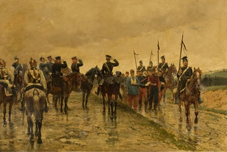
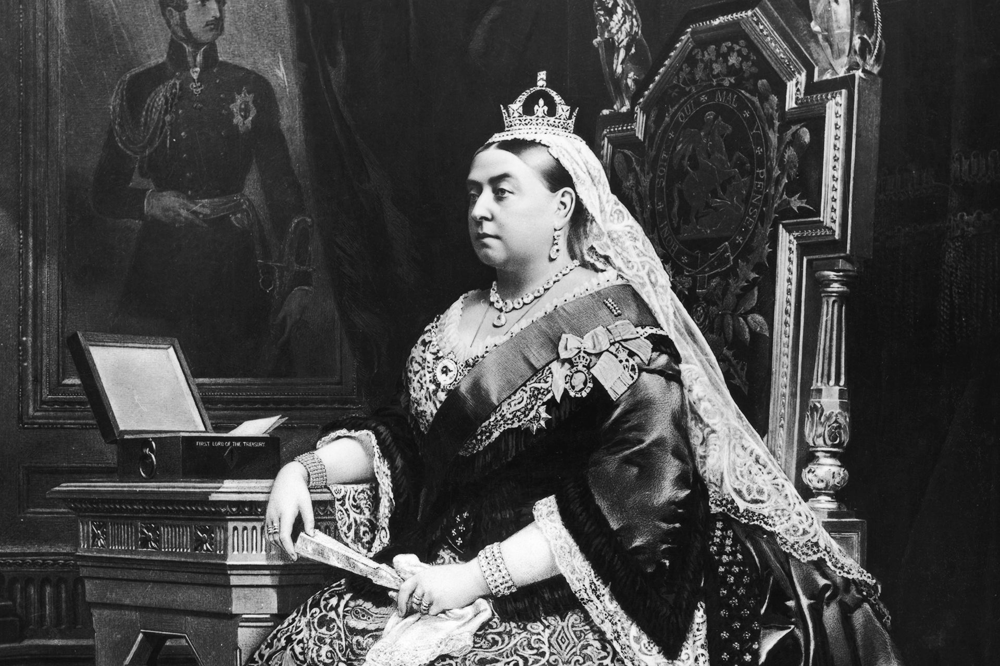

A Timeline of Transformation
The 19th century was a period of profound change and upheaval, marked by significant colonial revolts and social transformations. These events had a lasting impact on the British monarchy, reshaping its role and relationship with its subjects.
Colonial revolts, such as the American Revolution and the Irish Rebellion of 1798, challenged the established order and led to significant shifts in power dynamics well into the 19th century. These revolts were driven by a complex interplay of factors, including political, economic, and social grievances. The American Revolution, fueled by the desire for greater autonomy and representation, resulted in the loss of a significant part of the British Empire. The Irish Rebellion, though ultimately unsuccessful, exposed deep-seated tensions and fueled nationalist sentiments. These colonial revolts had a lasting impact on the British monarchy, leading to a gradual decline in its power and influence.
Social change, driven by the Industrial Revolution, further reshaped the social fabric of Britain. The rise of industrialization and urbanization led to new class structures, economic inequalities, and social unrest. The old order, based on land ownership and aristocratic privilege, was challenged by the emergence of a new middle class and an increasingly discontented working class. This social change had a profound impact on the monarchy, as it was forced to adapt to a more democratic and egalitarian society.
The combined impact of colonial revolts and social change led to a gradual decline in the power of the monarchy. The Crown's role became more symbolic and less directly involved in political decision-making. The rise of democracy and representative government further limited the monarchy's influence. But, the Victorian era saw a resurgence in the popularity of the monarchy, as Queen Victoria's personal appeal and association with national values helped to restore its prestige. The 19th century closed with the monarchy still holding a prominent place in British society, albeit one transformed by the forces of colonial revolts and social change.